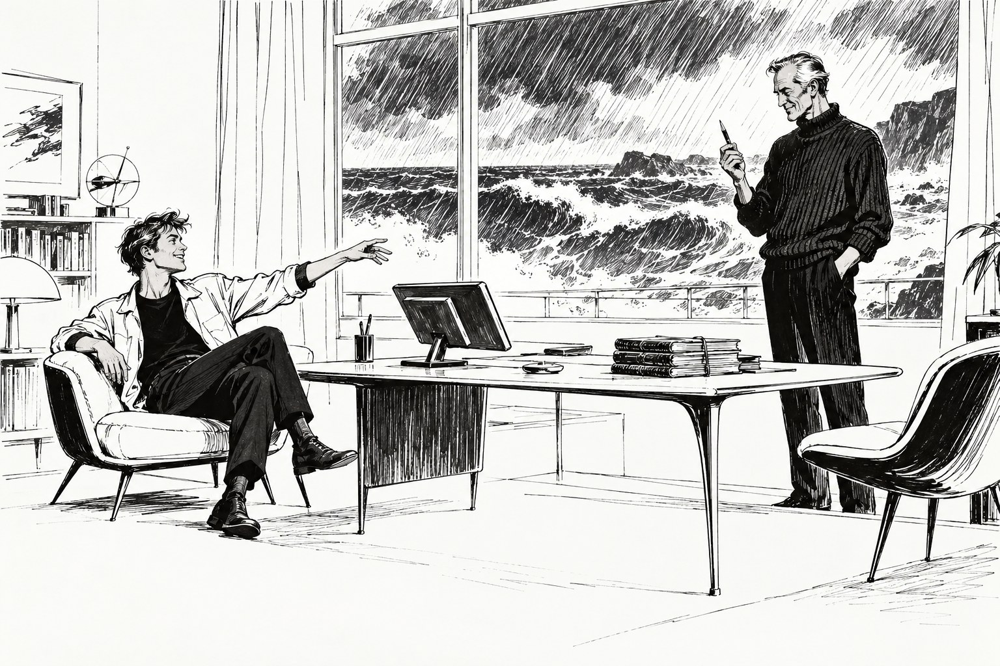

Пустая запись

Глава первая.
Шторм начался с утра и к полудню разошёлся во всю силу. Море стало серым и тяжёлым, волны шли к берегу наискосок и разбивались о волнолом с таким звуком, будто там, внизу, кто-то ронял на камень мокрые мешки. Пациентов в такую погоду не бывало, и Ветлугин сидел в кабинете один, разбирал накопившиеся за осень письма и время от времени поднимал глаза на окно, по которому косо хлестал дождь.
Дверь открылась без стука. Вошёл молодой человек лет двадцати пяти, худой, в мокрой куртке, с мокрыми волосами, и осмотрелся с таким видом, словно зашёл к старому приятелю и проверяет, не переставлена ли мебель.
— Добрый день, доктор, — сказал он. — Серосовин, КОМКОН-два. Можно Гриша. Вы извините, что без предупреждения, у вас тут связь пропадает через каждые пять минут.
— Шторм, — сказал Ветлугин. — Садитесь.
Гриша не сел. Он подошёл к столу, взял из стаканчика стило, повертел его в пальцах, словно разглядывая, и вдруг, без всякого замаха, бросил его Ветлугину в лицо. Ветлугин поймал его у самого лба, сам не поняв как, и посмотрел на стило у себя в кулаке.
— Отлично, — сказал Гриша с удовольствием и теперь уже сел, закинув ногу на ногу. — Извините. Привычка. У нас в отделе считается, что по реакции можно сразу понять, с кем имеешь дело.
— И с кем же?
— С человеком, который когда-то работал во внеземелье, — сказал Гриша. — На Земле так не ловят. На Земле уклоняются.
Ветлугин положил стило обратно в стаканчик. Мальчик ему скорее нравился, и это ему не нравилось. Он давно заметил, что из КОМКОНа-2 приезжают либо очень скучные люди, либо очень обаятельные, и что со вторыми труднее.
— Слушаю вас, — сказал он.
— Дело пустячное, — сразу предупредил Гриша. — Я вам честно скажу, в отделе никто не хотел им заниматься, поэтому оно досталось мне. Алина Аскарова вам что-нибудь говорит?
— Нет.
— А Тимур Аскаров?
Ветлугин помолчал. За окном ударила волна, и стёкла чуть дрогнули.
— Тимур Аскаров погиб на Пандоре, — сказал он. — Давно, лет двадцать пять назад. Я тогда работал врачом на охотничьей базе.
— Двадцать семь, — поправил Гриша. — Алина — его дочь. Ей было три года, когда он погиб. Сейчас она ксенобиолог, и весной ей лететь на Пандору. И вот перед вылетом она решила узнать, как именно погиб отец. Раньше не хотела, а теперь решила. И запросила в информатории всё, что там есть. А есть там немного: рапорт начальника базы, ваше медицинское заключение и ментограмма его напарника, Родиона Тарханова. Снята с его согласия, сдана в архив и открыта для родственников погибшего. Всё как полагается.
Он сделал паузу, как делают паузу рассказчики, когда подходят к самому интересному.
— Информаторий выдал ей ментограмму, — сказал он. — Нужной длины. С нужной датой. С вашей подписью, доктор. И совершенно пустую. Не шум, не помехи, не испорченные данные. Ровный ноль от первой секунды до последней. Алина, естественно, пожаловалась в информаторий. Информаторий проверил себя и сообщил, что ничего не терял: запись была пустой в тот день, когда попала в архив. И вот это уже попало к нам.
— Почему к вам?
Гриша пожал плечами.
— Потому что такого не бывает, — сказал он. — У нас есть такая служба, она смотрит на странности в информатории. Странностей там мало, ведь скрывать никому нечего. А если скрывать нечего, то каждая странность видна издалека. Поймите меня правильно, доктор. Меня не интересует, как погиб Аскаров. Это несчастный случай, старая история, и пусть ею занимаются историки Пандоры. Меня интересует другое. Передо мной запись, которая выглядит как настоящая и ничего не содержит. Значит, такие записи можно делать. А если можно сделать одну…
Он не договорил. Ветлугин подумал, что мальчик делает это нарочно: оставляет фразу открытой и смотрит, что собеседник доскажет за него. Он ничего не досказал.
— Я вас ни в чём не обвиняю, — мягко сказал Гриша. — Я просто хочу понять, как она получилась. Вы снимали её сами?
— Сам.
— И помните, что там было?
Ветлугин посмотрел в окно. По стеклу бежала вода, и море за ней казалось расплывчатым и далёким, как на плохой старой съёмке.
— Нет, — сказал он. — Двадцать семь лет, Гриша. Я тогда снимал ментограммы чуть не каждую неделю: охотники возвращались с контузиями, с провалами в памяти, кто-то просто из сельвы выходил не в себе. А полевые ментоскопы в те годы были капризные. Влажность, перепады температуры… Я посмотрю свои тетради. Я тогда вёл тетради.
— Бумажные? — оживился Гриша.
— Бумажные. Меня так учили.
— Замечательно, — сказал Гриша и, кажется, сказал искренне. Он поднялся. — Тогда я зайду завтра утром, доктор. Не стану вас торопить. Я поселился тут недалеко, в старом пансионате, там сейчас никого, кроме меня и кибера-уборщика, который страдает от безделья. Всего хорошего.
У двери он обернулся.
— У нас в отделе меня зовут Водолеем, — сказал он. — Это не по гороскопу. Это потому, что я люблю приходить в дождь. Говорят, в дождь люди сговорчивее.
И ушёл, оставив на полу мокрые следы.
⁂
Ветлугин долго сидел неподвижно. Потом встал, подошёл к стенному шкафу, открыл нижнюю дверцу и достал стопку тетрадей в серых пластиковых обложках, пожелтевших по краям. Он знал, в какой из них нужная запись. Он знал даже, на какой странице и что там написано, потому что написано там было всего несколько строчек, и все они были неправдой.
Тетрадь он открывать не стал. Положил стопку на стол, сел и стал смотреть на неё, как смотрят на письмо, которое очень давно отправил и которое вдруг вернулось назад нераспечатанным.
Он двадцать лет читал в Школе прогрессоров лекции о том, что ментограмма не лжёт. Что врач может ошибиться в толковании, а запись не ошибается никогда, и что на этом держится всё доверие к их ремеслу. И все эти годы в архиве лежала одна запись, которая не лгала только потому, что ничего не говорила.
За окном темнело. Шторм не утихал. Ветлугин сидел над закрытой тетрадью и думал о том, что только что сказал неправду человеку, который пришёл к нему в дождь, и что не помнит, когда делал это в последний раз. Потом понял, что помнит. В последний раз это было двадцать семь лет назад, и по тому же самому поводу.
Глава вторая.
Ночью он не спал и даже не пытался. Сидел на закрытой веранде, слушал, как шторм бьёт в берег, и вспоминал. Вспоминать оказалось не трудно. Он думал, что за двадцать семь лет та ночь стёрлась или хотя бы потускнела, а она лежала в памяти целая, как вещь в запертом сундуке, и даже запахи в ней сохранились.
Ему было двадцать с небольшим, и это был его первый год на Пандоре и вообще первый год врачом. Охотничья база стояла на краю леса, и по ночам из леса доносились такие звуки, что первые недели он вскакивал и брался за аптечку. Потом привык. Охотники посмеивались над ним без злобы и звали «докторёнок». Их было человек пятнадцать, и больше всех он любил двоих, которые всегда ходили вместе: Тимура Аскарова, широкого, спокойного, который показывал всем фотографии трёхлетней дочки, и Родиона Тарханова, сухого, быстрого, с вечно сощуренными глазами. Тарханов был старше Ветлугина лет на пять и очень гордился тем, что их с Аскаровым называют лучшей парой на базе.
Они ушли за тахоргом в обычное утро, и вернулся к вечеру один Тарханов. Он был цел, на нём не было ни царапины, и он шёл по поляне к базе так ровно и аккуратно, что Ветлугин ещё издали понял: шок. Аскарова нашли на следующий день в десяти километрах от базы, в овраге. Тахорг ударил его один раз, и Ветлугин, сам осматривавший тело, написал в заключении, что смерть наступила в первые секунды. Это была правда, и в этой части заключения неправды не было ни слова.
Тарханов не помнил, как это случилось. Он помнил, как они шли по следу, помнил, как Аскаров обернулся и что-то сказал, а дальше шло белое место, и сразу после него поляна, база и Ветлугин, который бежит ему навстречу. Вечером он пришёл в медпункт сам и сам попросил снять ментограмму.
«Иначе будет следствие, — сказал он, — а следствие — это долго. Смотри, докторёнок. Мне скрывать нечего».
И Ветлугин посмотрел.
Он до сих пор мог бы нарисовать ту ментограмму по памяти, кадр за кадром. Овраг, прелые листья по колено, широкая спина Аскарова впереди. Аскаров оборачивается и говорит: «Тихо. Он рядом». И тут же слева расходятся кусты, и что-то огромное, тёмное, невозможно быстрое заполняет собой всё. Аскарова больше нет. То есть он есть, он лежит в листьях, но его уже нет, и ментограмма показывает это с той жестокой ясностью, с какой человек понимает такие вещи в первую секунду. Тахорг поворачивает голову. У Тарханова в руках карабин, и на ментограмме видно, как ствол смотрит куда-то в листья, в сторону. Потом карабин падает, и начинается бег. Долгий безобразный бег через лес, с падениями, с чьим-то тонким воем, который Ветлугин не сразу понял, чей он.
Аскарова нельзя было спасти. Никакой выстрел уже ничего не менял, и в этом Ветлугин был уверен тогда и был уверен сейчас. Но Тарханов этого не знал. Он не выстрелил не потому, что понял бесполезность, а потому, что испугался. Он даже не попробовал. А потом его память сама собой, как это иногда бывает, закрыла эту минуту и оставила вместо неё белое место.
Ветлугин сидел в медпункте над прибором, а Тарханов спал в кресле после сеанса, как спят после ментоскопии все, тяжело и без снов. По правилам запись нужно было в тот же день сдать в архив: смертельный случай, дело открытое, доступ для родных. Он думал о том, что когда-нибудь эту запись увидит девочка с фотографий. И ещё о том, что сам Тарханов, если захочет, тоже сможет её увидеть, и тогда белое место заполнится, и теперь уже навсегда.
Ему было двадцать с небольшим, и он сделал то, что тогда казалось ему единственно человечным. Написал в заключении: несчастный случай, смерть мгновенная, исход от действий напарника не зависел. Всё было правдой. Потом стёр запись с прибора, спарил чистые датчики, как на проверке, и прогнал прибор вхолостую ровно столько же минут, сколько длился сеанс. Эту запись он и подписал. Тарханову он ничего не сказал, а Тарханов ни о чём не спросил. Через месяц он улетел на Землю и на Пандору больше не вернулся.
И всё это время Ветлугин помнил, что на свете есть один человек, который знает про Родиона Тарханова больше, чем сам Родион Тарханов. Всё это время он не разрешал себе над этим думать.
⁂
Утром шторм устал. Море ещё ходило тяжёлыми пологими валами, но дождь кончился, и сквозь тучи над горами пробивалось бледное ноябрьское солнце. Гриша пришёл в девять, снова без стука, с двумя стаканами горячего чая из пансионата, один поставил перед Ветлугиным, с другим уселся в то же кресло. На стопку тетрадей на столе он посмотрел с нескрываемым интересом, но ничего не спросил.
— Я тут ночью поинтересовался, — сказал он, как бы извиняясь. — Не спалось, кибер гремел. Вы сказали, полевые ментоскопы были капризные. Это правда. Они путали кадры, давали шум, обрывали запись на середине. Я нашёл сводку по всем их отказам за десять лет, там несколько тысяч случаев. И ни разу они не дали ровного нуля. Живой мозг, даже спящий, даже в шоке, нуля не даёт. Ноль получается только в одном случае.
Он отпил чаю.
— Когда в кресле никого нет, — сказал он.
Ветлугин не ответил. Гриша не торопил его. Он сидел, держа стакан обеими руками, и смотрел не на Ветлугина, а в окно, на море, и вид у него был такой, будто ему совсем некуда спешить. И Ветлугин вдруг понял, что так и есть, что этот весёлый мальчик со стилом умеет ждать лучше него самого. И что мальчик не дурак, совсем не дурак.
— В кресле никого не было, — сказал Ветлугин.
И рассказал всё. Про овраг, про карабин, про белое место в памяти Тарханова и про пустой прибор, который гудел вхолостую в ночном медпункте. Рассказал спокойно и по порядку, как привык рассказывать студентам разбор чужого случая. Только на этот раз случай был не чужой.
Гриша долго молчал. Чай у него в стакане остыл. Потом он поставил стакан на стол, аккуратно, словно боялся стукнуть, и сказал:
— Спасибо, доктор.
И больше ничего. Это был первый раз за два дня, когда он не пошутил.
Глава третья.
— Вы понимаете, что теперь дело уже не пустячное, — сказал Гриша.
Они сидели всё в том же кабинете. Солнце передвинулось, и по полу лежала широкая светлая полоса с тенью оконной рамы посередине.
— Понимаю, — сказал Ветлугин.
— Нет, я хочу, чтобы вы поняли точно. — Гриша подался вперёд. — Меня не очень волнует, что двадцать семь лет назад молодой врач пожалел охотника. Я, может быть, сам бы пожалел. Меня волнует, что врач-ментоскопист может сдать в архив запись, которая выглядит как настоящая, и никто этого не заметит двадцать семь лет. Мы ведь все думаем, что ментограмма — это твёрдая земля. Что люди могут ошибаться, врать, забывать, а запись нет. Вы же сами этому учите. А оказывается, земля там, где её оставил честный человек. Для нашего отдела это именно то, ради чего мы существуем.
— И что вы собираетесь делать?
— Написать отчёт, — сказал Гриша. — Это моя работа. Но сначала я хочу увидеть Тарханова.
— Зачем?
Гриша пожал плечами.
— Это ведь его запись, — сказал он. — Вы его двадцать семь лет не спрашивали. Мне кажется, его пора спросить. Вы летите?
⁂
Кордон наблюдателя стоял в долине между двумя сопками, на берегу быстрой тёмной реки, по которой шла шуга. Снег выпал неделю назад, и всё вокруг было белым, только река чёрная да на склонах торчали кривые каменные берёзы. Над дальней сопкой стоял дымок, и Ветлугин не сразу понял, что это не облако, а вулкан.
Тарханов вышел им навстречу ещё до того, как глайдер сел. Он постарел и стал шире, волосы у него сделались совсем белыми, но глаза остались те же, сощуренные, и он узнал Ветлугина сразу, ещё издали.
— Докторёнок, — сказал он, и получилось совсем не смешно, потому что Ветлугину было под пятьдесят. — Я так и думал, что кто-нибудь прилетит. Только не думал, что ты.
В доме было тепло и пахло сушёной рыбой. На стенах висели карты долины с пометками карандашом, на полке стояли дневники наблюдений, один к одному, за много лет. Карабина нигде не было. Ветлугин почему-то обратил на это внимание сразу.
Гриша представился коротко и сел в углу, и было видно, что он старается занимать как можно меньше места. Стило он никому не бросал.
— Алина мне писала, — сказал Тарханов, разливая чай. — Месяц назад. Вежливо, хорошо написала. Что летит на Пандору и хочет знать, как всё было. Что не сразу решилась написать. А я ей не ответил. Написал только, что в архиве есть моя ментограмма и что там всё видно лучше, чем я могу рассказать.
Он поставил кружки на стол и сел напротив Ветлугина.
— Знаешь, доктор, я ведь сам её ни разу не смотрел, — сказал он. — Мог в любой день. Двадцать семь лет мог. И не смотрел. Думал, вот соберусь и посмотрю. Вот ещё год. А когда Алина написала, я, знаешь, что почувствовал? Облегчение. Что вот сейчас кто-то посмотрит вместо меня, и всё наконец будет известно. Я всю жизнь живу с таким… — он поискал слово, — с таким чувством, что я что-то забыл. Не события, события я знаю, ты сам написал: исход не зависел. А что-то другое. Как будто виноват, а в чём, не помню. Я и на Пандору поэтому больше не летал. И охотиться бросил. Вот сижу здесь, считаю чужих медведей.
За окном шла шуга, и было слышно, как льдины тихо трутся друг о друга.
— А потом из архива написали, что запись пустая, — сказал Тарханов. — И я сразу понял, что не ошибка это. Я тебя помню, доктор. Ты и тогда ничего не делал по ошибке. — Он поднял глаза. — Что там было?
Ветлугин молчал. Он думал о том, что на свете теперь три человека, и у каждого из них есть своё право. У девочки с фотографий, которая давно уже не девочка, есть право знать, как умер её отец. У этого белоголового человека есть право знать о самом себе. А единственная запись той минуты, настоящая и полная, хранится только в памяти самого Ветлугина, и никакого права на неё у него нет. Двадцать семь лет он решал за всех троих: за неё, за него и за Тимура Аскарова, которого уже ни о чём не спросишь. И все двадцать семь лет называл это милосердием.
Гриша в своём углу поднялся.
— Я выйду, — сказал он. — Посмотрю реку.
И вышел на мороз без куртки, аккуратно притворив за собой дверь.
Ветлугин посмотрел Тарханову в глаза и начал рассказывать. Про овраг. Про прелые листья по колено. Про то, как Аскаров обернулся и сказал: «Тихо. Он рядом».
Глава четвёртая.
Тарханов слушал, не перебивая. Он сидел, положив на стол большие тёмные руки, и смотрел на них, а когда Ветлугин дошёл до карабина, руки на столе сжались и так и остались. Ветлугин рассказал всё до конца, до поляны и базы, и замолчал.
Долго было тихо. В печи потрескивало, за окном шла шуга.
— Значит, побежал, — сказал наконец Тарханов.
— Побежал.
— А если бы выстрелил?
— Ничего бы не изменилось, — сказал Ветлугин. — Это я тебе говорю как врач, Родион. Я видел тело. Он умер сразу.
— Я этого не знал, — сказал Тарханов. — Там, в овраге. Я не знал, что он умер сразу.
— Не знал.
Тарханов кивнул, словно что-то для себя подтвердил. Потом разжал руки и потёр ладонями лицо, долго, как трут лицо на морозе.
— Странно, — сказал он. — Я думал, будет хуже. А оно такое же, как было. Только теперь понятно, что это. Двадцать семь лет носил в себе камень и не знал, какой он формы. Теперь знаю.
Он встал, подошёл к окну и посмотрел на реку. Возле реки, на камне, сидел Гриша в одном свитере и бросал в шугу снежки.
— Я полечу к Алине, — сказал Тарханов, не оборачиваясь. — Сам. Расскажу ей сам. Не из архива и не через тебя. Она имеет право услышать это от меня. А я имею право ей это сказать. Это, доктор, тоже право, только в информатории его не запишешь.
Он помолчал.
— Ты мне дал двадцать семь лет, — сказал он. — Спасибо, наверное. Я не знаю. Но хватит.
⁂
Обратно летели ночью. В темноте под глайдером ничего не было видно, только изредка проплывали далеко внизу светящиеся пятна городов. Гриша сидел с планшетом на коленях и писал. Писал он быстро, потом останавливался, стирал и писал снова. Наконец он повернул планшет к Ветлугину.
— Посмотрите, — сказал он. — Это уйдёт Сикорски.
Отчёт был короткий, на полстраницы. Запись пуста с момента создания. Причина установлена и состоит в действиях врача, снимавшего ментограмму, по мотивам личного характера. Внешнего вмешательства в работу информатория не обнаружено. Связи с предметом ведения отдела не установлено. Заинтересованные лица осведомлены. Дело предлагается закрыть.
Имени врача в отчёте не было. Оно и так стояло под записью, и тот, кто захотел бы его узнать, узнал бы за минуту. Про овраг, про карабин и про камень, который носили двадцать семь лет, не было ни слова.
Ветлугин прочёл два раза и отдал планшет.
— Вы ведь написали почти то же, что я тогда, — сказал он. — Всё правда, и всё не вся правда.
Гриша посмотрел на него, и Ветлугин впервые увидел у него совсем взрослое лицо, усталое и невесёлое.
— Нет, доктор, — сказал он. — Вы тогда решили, что человеку не нужно знать правду о себе. А я написал, что угрозы нет. Угрозы нет. Всё остальное сами люди теперь знают, а нашему отделу это не нужно. — Он помолчал и добавил тише: — У нас ведь тоже всё держится на том, что кто-то решает, какую правду нести наверх, а какую нет. Я только не думал, что решать буду я. И так скоро.
Он нажал кнопку, и отчёт ушёл.
— Водолей, — сказал Ветлугин, сам не зная зачем.
Гриша не улыбнулся. Он смотрел в чёрное окно, в котором ничего не было видно, кроме их собственных отражений.
⁂
В Крыму было тихо. Море успокоилось и лежало плоское, серебряное, как будто и не было никакого шторма. Гриша забрал из пансионата свой рюкзак и зашёл попрощаться. На пороге кабинета он остановился, взял из стаканчика стило и бросил, и на этот раз Ветлугин не поймал. Стило ударилось ему в грудь и укатилось под стол.
— Стареете, доктор, — сказал Гриша.
— Расслабился, — сказал Ветлугин.
И они оба засмеялись, впервые за эти три дня.
Когда глайдер улетел, Ветлугин долго ещё стоял у окна. Он думал о том, какая трудная жизнь предстоит такому мальчику в таком отделе. Там будут дела потяжелее пустой записи, и правда, которую несут наверх, будет не его и не его выбора. И ещё о том, что сегодня, наверное, Тарханов уже звонит в дверь Алины Аскаровой, и что об этом разговоре в информатории не останется никакой записи, ни пустой, ни настоящей.
Потом он нагнулся, достал из-под стола стило и поставил его на место.